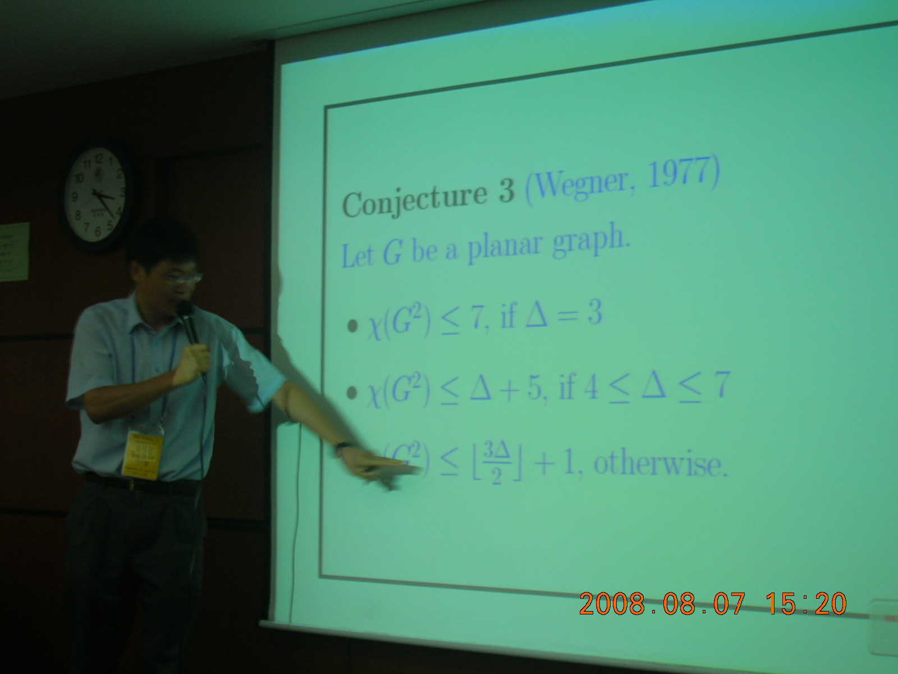
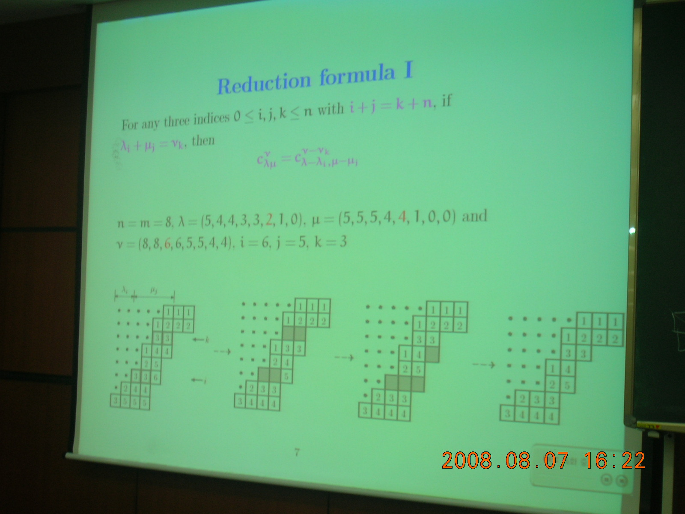
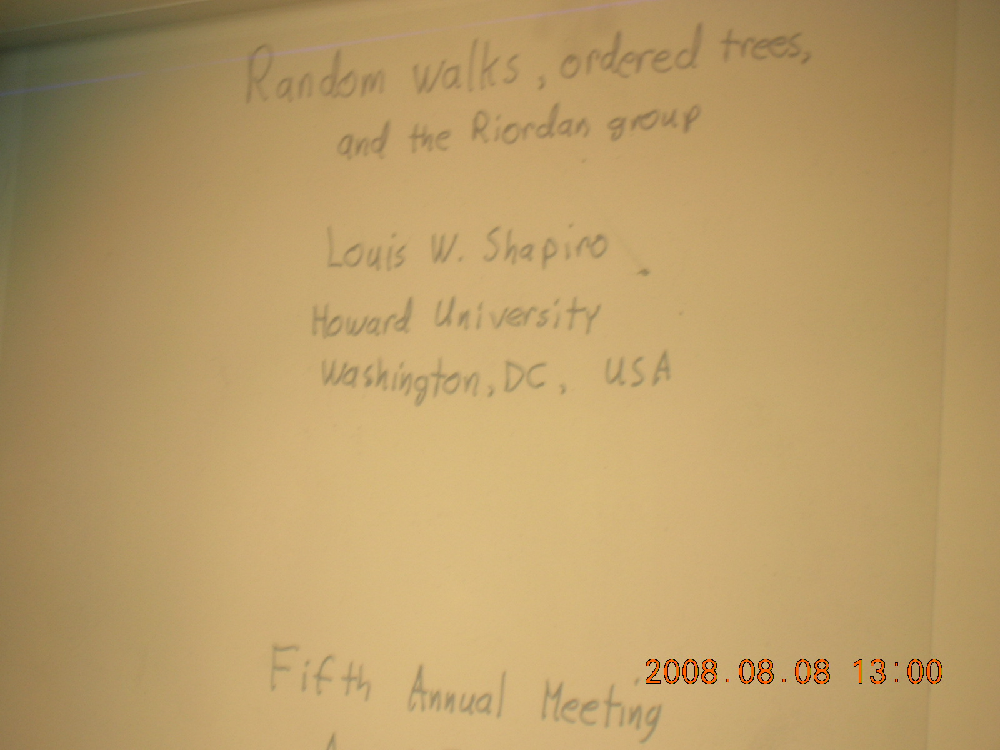

2008 Workshop on Combinatorics
2008 조합론 학술회의
주관 : 성균관대학교 BK21 사업단
후원 : 성균관대학교 기초과학연구소, 대한수학회 전산수학분과
•Organizing Committee:
•Sang-Gu Lee (Sungkyunkwan University)
•Dongsu Kim (Korea Advanced Institute of Science and Technology)
•Seung Kyung Park (Yonsei University)
•Jaeun Lee (Yeungnam Univesity)
•Gi-Sang Cheon (Sungkyunkwan University)
•Sang-Gu Lee (Sungkyunkwan University)
12:40 - 13:00 Welcome reception (tea and snacks)
13:00 - 13:50 Invited Lecture Chair: Sang-Gu Lee
Sang-il Oum¤ (KAIST) and Petr Hlineny
Finding branch-decompositions and rank-decompositions

13:50 - 14:10 Break
14:10 - 15:40 Contributed Talks Chair: Dongsu Kim
14:10 - 14:40 Suyoung Choi¤(KAIST), Taras Panov (Moscow State Univ.) and Dong Youp Suh (KAIST)
Cohomological Rigidity of simple polytopes
14:40 - 15:10 Duk-Sun Kim¤ and Sang-Gu Lee (Sungkyunkwan Univ.)
Malthematical modeling of Korean web search engine and Google matrices
15:10 - 15:40 Seog-Jin Kim (Konkuk Univ.)
Injective coloring of sparse graphs

15:40 - 16:00 Break
16:00 - 16:50 Invited Lecture Chair: Kinkar Ch. Das
Soojin Cho¤(Ajou Univ.), Eun-Kyoung Jung and Dongho Moon (Sejong Univ.)
Reduction formulae from the factorization Theorem of Littlewood- Richardson polynomials by King, Tollu and Toumazet

16:50 - 17:50 Contributed Talks Chair: Seog-Jin Kim
16:50 - 17:20 Joon Yop Lee (POSTECH)
Reordering methods in q-series
17:20 - 17:50 Taekyun Kim¤(Kwangwoon Univ.) and Kyoung-Ho Park(kyungpook Univ.)
Complete sum of products of (h;q)-extension of Euler polynomials and Numbers
17:50 Photo Session
18:00 - 20:00 Banquet
10:00 - 10:50 Invited Lecture Chair: Mitsugu Hirasaka
Jacobus H. Koolen¤(POSTECH), Sejeong Bang (Busan National Univ.)
On the Bannai-Ito Conjecture
10:50 - 11:00 Break
11:00 - 12:00 Contributed Talks Chair: Jaeun Lee
11:00 - 11:30 Myeong-Ju Jeong (KSA)
Negami's polynomial and symmetry of graphs

11:30 - 12:00 Hana Kim¤, Sung-Tae Jin, Gi-Sang Cheon(Sungkyunkwan Univ.) and Louis W.
Shapiro(Howard Univ.)
Riordan group involutions and the related sequence
12:00 - 13:00 Lunch
13:00 - 13:50 Invited Lecture Chair: Gi-Sang Cheon
Louis W. Shapiro (Howard Univ.)
Random walks, ordered trees, and the Riordan group

13:50 - 14:00 Break
14:00 - 16:00 Contributed Talks Chair: Jacobus H. Koolen
14:00 - 14:30 Bo ram Park (Seoul National Univ.)
The competition numbers of multipartite graphs
14:30 - 15:00 Kinkar Ch. Das (Sungkyunkwan Univ.)
Bounds on the degree distance of a graph
15:00 - 15:30 Jun-Ho Her (INRIA)
A tool for e±cient and scalable parallel graph partitioning
15:30 - 16:00 Sook Min¤ and Seung Kyung Park (Yonsei Univ.)
The maximal-inversion statistic and pattern-avoiding permutations
16:00 - 16:20 Break
16:20 - 17:10 Invited Lecture Chair: Seung Kyung Park
Mitsugu Hirasaka (Pusan National Univ.)
Remarks on p-valenced association schemes and its duality
17:10 Closing Remark Jin Ho Kwak (POSTECH), Suk-Geun Hwang (Kyungpook National Univ.),
and Dongsu Kim (KAIST)
Made by Sang-Gu Lee and Duk-Sun Kim with Album 1.5
|
|